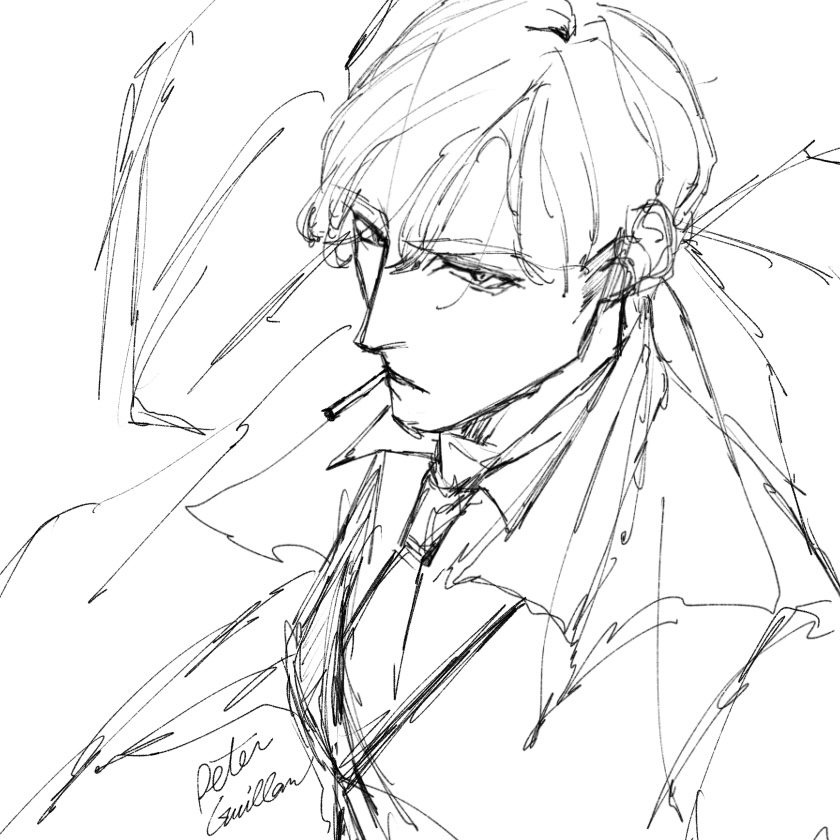

Character

ピーター・ギラム
英国情報機関“サーカス”に所属し、汚れ仕事専門部隊《首狩り人》のチーフを務めるスパイ。
冷静で交渉に長けた有能なエージェントでありながら、多忙と苦労に疲れ気味のヘビースモーカー。

ヘクター・ディクソン
フリーランスの殺し屋で、業界では“万年ナンバー2”の異名を持つ荒くれ者。
相棒のファビアンとともに行動し、ピーターのことを皮肉混じりに「坊ちゃん」と呼ぶ。
ある事件でサーカスに関わって以降、不可解な繋がりを持ち始める。